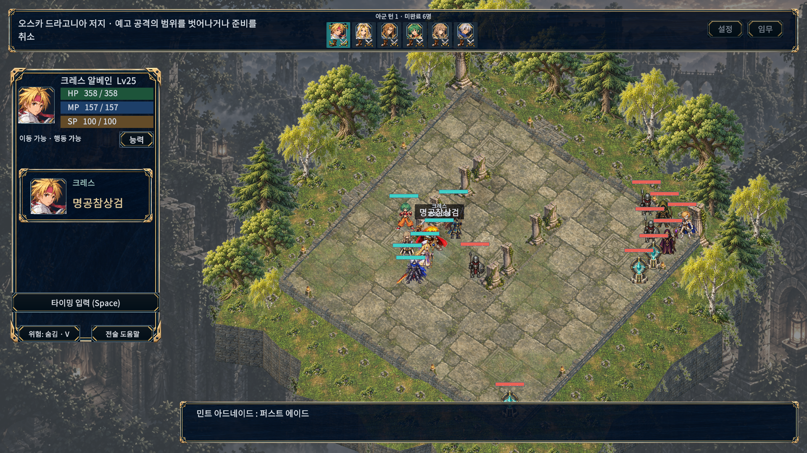

‘처음부터 함께 재생’은 두 영상의 시작점을 맞춥니다. 이동 연출이 추가된 기술은 타격 시점이 다르므로, ‘타격 직후 비교’로 각 버전의 실제 타격 프레임을 볼 수 있습니다. 영상은 자동 재생하지 않습니다.
캡처 조건과 원본
이전 소스는 13afcbe, 적용 후 소스는 최종 촬영 시점의 개발 작업 사본입니다. 이전 자료는 before-visible, 적용 후 자료는 모두 after-final 촬영에서 가져왔습니다. 두 촬영 모두 위치·레벨을 맞춘 격리 검수 데이터에서 실제 기술 실행 경로를 사용했습니다. 아군 6명, 기본 카메라 줌, 글자 100%를 유지하고 반응 공격을 껐습니다.
이전과 최종 적용 후 촬영은 각각 일반 6장면·저효과 6장면의 실행·격자 위치 보존·효과 정리를 통과했고 수집 오류는 0건입니다. 여섯 기술 모두 일반·저효과 및 이전·적용 후의 HP 변화와 카메라 크기가 일치합니다. 사용자·격리 저장 파일의 해시도 촬영 전후 동일합니다.
PNG는 Unity 원본 파일을 그대로 복사했습니다. MP4는 원본 PNG 전체를 해상도·프레임 순서 변경 없이 H.264로 압축했습니다. 고정 시간 촬영이므로 실시간 성능 벤치마크가 아니며, 무음 영상으로 음향 품질을 판단할 수 없습니다. 전 캠페인 수동 검수나 모든 기술의 시각 검증을 뜻하지 않습니다.
필살기 준비 장면 · 원본 PNG

실제 준비 프레임을 무변경 복사했습니다. 이미지를 누르면 원본 크기로 열립니다.
화면에 남은 한계: 촬영 중 하단 전투 메시지에는 직전 기술명이 남는 장면이 있습니다. 필살기 준비에서는 머리 위 기술명과 캐릭터 정보가 겹쳐 보입니다. 원본 캡처는 보정하지 않았습니다.